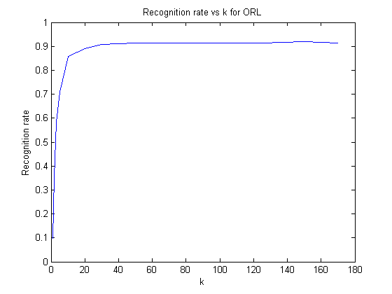
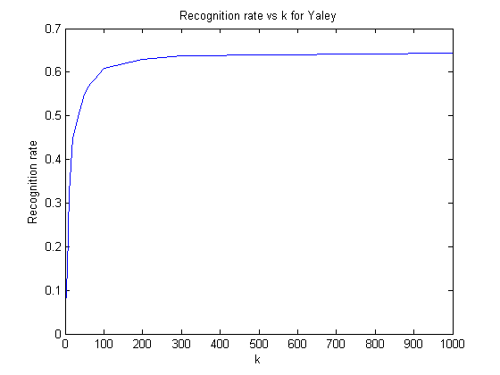

Contents
MyMainScript
tic;
Your code here
fname = uigetdir();
N = 35*5;
d = 112*92;
G=5;
X = zeros(d,N);
kArray = [1,2,3,5,10,20,30,50,75,100,125,150,170]';
kArraySize = size(kArray);
rate = zeros(size(kArray));
for m = 1:kArraySize
k = kArray(m);
for i = 1:35
for j=1:G
address = strcat(fname,'/','att_faces/s',num2str(i),'/',num2str(j),'.pgm');
[src] = imread(address);
X(:,G*(i-1)+j) = reshape(src,[],1);
end
end
Xbar = mean(X')';
for i = 1:N
Xsub(:,i) = X(:,i) - Xbar;
end
L = Xsub'*Xsub;
[W,lam] = eig(L);
eigVec = normc(Xsub*W);
eigVeck = fliplr(eigVec(:,N-k+1:N));
alpha = eigVeck'*Xsub;
correctCount =0;
miscount = 0;
for i = 1:35
for j = 6:10
address2 = strcat(fname,'/','att_faces/s',num2str(i),'/',num2str(j),'.pgm');
[probe] = imread(address2);
probe = reshape (probe,[],1);
probe = double(probe) -Xbar;
alphaprobe = eigVeck'*probe;
temp = 0;
dist = 999999;
for p = 1:N
if(norm(alphaprobe - alpha(:,p)) < dist)
dist = norm(alphaprobe - alpha(:,p));
temp = ceil(p/5);
end
end
if (temp ==i)
correctCount = correctCount+1;
else
miscount = miscount + 1;
end
end
end
rate(m) = correctCount/175;
end
figure
plot(kArray, rate),title('Recognition rate vs k for ORL'),axis on, xlabel('k'),ylabel('Recognition rate');
fname = uigetdir();
N = 38*30;
d = 192*168;
G=30;
X = zeros(d,N);
kArray = [1,2,3,5,10,20,30,50,60,65,75,100,200,300,1000]';
kArraySize = size(kArray);
rate = zeros(size(kArray));
iter = 1;
for i = 1:39
if(i == 14)
continue;
end
folderName = strcat(fname,'/','CroppedYale/yaleB',num2str(floor(i/10)),num2str(i-10*floor(i/10)));
fileList = dir(folderName);
for j=1:G
address = strcat(folderName,'/',fileList(j+2).name);
[src] = imread(address);
X(:,G*(iter-1)+j) = reshape(src,[],1);
end
iter= iter + 1;
end
Xbar = mean(X')';
Xsub = zeros(size(X));
for i = 1:N
Xsub(:,i) = X(:,i) - Xbar;
end
L = Xsub'*Xsub;
[W,lam] = eig(L);
for m = 1:kArraySize
k = kArray(m);
eigVec = normc(Xsub*W);
eigVeck = fliplr(eigVec(:,N-k+1-3:N-3));
alpha = eigVeck'*Xsub;
correctCount =0;
miscount = 0;
for i = 1:39
if(i ==14 )
continue;
end
folderName = strcat(fname,'/','CroppedYale/yaleB',num2str(floor(i/10)),num2str(i-10*floor(i/10)));
fileList = dir(folderName);
for j = 31:60
address2 = strcat(folderName,'/',fileList(j+2).name);
[probe] = imread(address2);
probe = reshape (probe,[],1);
probe = double(probe) -Xbar;
alphaprobe = eigVeck'*probe;
temp = 1;
dist = norm(alphaprobe - alpha(:,1));
for p = 1:N
if(norm(alphaprobe - alpha(:,p)) < dist)
dist = norm(alphaprobe - alpha(:,p));
temp = ceil(p/30);
end
end
if (((temp ==i) && (i<14)) ||( (temp == i-1) &&(i>14)))
correctCount = correctCount+1;
else
miscount = miscount + 1;
end
end
end
rate(m) = correctCount/N;
end
figure
plot(kArray, rate),title('Recognition rate vs k for Yaley'),axis on, xlabel('k'),ylabel('Recognition rate');
toc;
Elapsed time is 1031.558220 seconds.
 